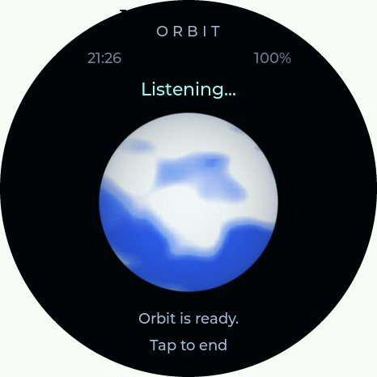
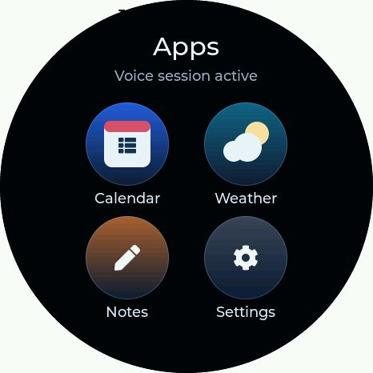
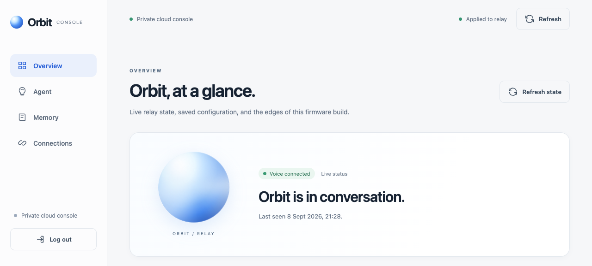

Real hardware · open source
A voice companion
in your hand.
An ESP32-S3, a round AMOLED display, and a voice agent that can show useful cards while it talks. This is Orbit running on the actual Waveshare device.
Watch Orbit work
Voice, cards, and live information.
The camera captures the physical device as Orbit moves between its animated listening orb, a weather forecast, and a web-search result. The round interface stays legible in the hand.
- Animated orb reacts to the voice session
- Weather appears on a full-screen card
- Web results become readable device cards
This public demo is silent. The original recording's personal calendar and dictated-note sections were excluded, and its audio and precise location metadata were removed.
More of the interface


